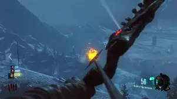
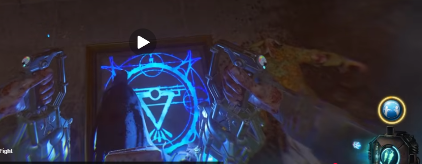
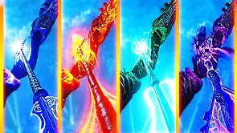

What you will need in this EE



You will need to shoot all the top rods on the downstairs teleporter with the explosive bow, then you will need to be quick and with your upgraded bow shoot the electric circles at 8 possible locations you'll have to look around the map but if you find the first one the rest well be nearby. There will only be 4 spots per round. You'll have to make it by the end of the current round, or you'll fail the step.